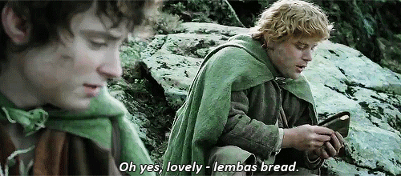

Lembas Bread : The Lord of the Rings

Description
The bread was very nutritious, stayed fresh for months when wrapped in mallorn leaves, and was used for sustenance on long journeys. Lembas was light brown on the outside, and the color of cream on the inside.
Ingredients
- 2 1/2 c
all purpose flour
- 1 Tbsp
baking powder
- 1/4 tsp
salt
- 1/2 c
butter
- 1/3 c
brown sugar
- 1 tsp
cinnamon
- 1/2 tsp
honey
- 2/3 c
heavy whipping cream
- 1/2 tsp
vanilla extract
Preparation
- Preheat oven to 425F. Mix the flour, baking powder and salt into a large bowl. Add the butter and mix with a well till fine granules (easiest way is with an electric mixer). Then add the sugar and cinnamon, and mix them thoroughly.
- Finally add the cream, honey, and vanilla and stir them in with a fork until a nice, thick dough forms.
- Roll the dough out about 1/2 in thickness. Cut out 3-inch squares and transfer the dough to a cookie sheet.Criss-cross each square from corner-to-corner with a knife, lightly (not cutting through the dough).
- Bake for about 12 minutes or more (depending on the thickness of the bread) until it is set and lightly golden.
- Let cool completely before eating, this bread tastes better room temperature and dry. Also for more flavor you can add more cinnamon or other spices